Projects
WACM was a club I founded and ran with the help of a number of amazing people at Western Sydney University.
I layed the groundwork and aimed for the club to be the representative society for the new School of Computing, Data
and Mathematical Sciences.
How it all began
It starts towards the end of my second last semester at university. My time at Western Sydney University was coming
to an end after one more
study session and I tried to look back to see if I was had made the best use of my time there. I was happy with my
academic results and also
my social involvement with helping run events through the International Student Club and Nepali Student Association.
Unfortunately, I didnt have any memories of running events with the people that I studied with nor attended any
events that were related to my degree.
It was also the time when the School of Computing, Engineering and Mathematics was being divided into the School of
Computational, Data and Mathematical
Science and the School of Engineering. Additionally, the then SRC President was also keen on uplifting student
engagement and replicating a similar model to
the highly successful student club at the School of Medicine.
In that way, it seemed that all the stars aligned and it was only the right thing to do - to work on establishing a
new club to represent the computing and mathematics students.
Establishment
Starting with a blank canvas presented both challenges and opportunity.
What should the club be named? We knew it had to contain the name "Western" in some way and should be representative
of all the IT, Math, CompSci, CyberSec etc students.
But also importantly, it should have a proper acronym and should be easy to pronounce. WACM ticked all boxes and
sounded quite alright too.
Next up the logo, how do you represent the computing and math students at WSU? Looking at the logos from the
computing societies at UNSW (>_) and USYD (#), I felt we needed to be
a simple yet catchy one. One evening, I opened up Canva because I didn't have photoshop installed. Played around
with a few shapes where and there and thought the cube concept
looks both modern and is definitely math friendly. Secondly, how to make it computer folk friendly? Well, OOP was
something we all learn hopefully in uni, so taking the cube as an
'object' and using creating 3 of such instances, it could be relatable. Nah jokes, but the three cubes were supposed
to represent the Computer, Data and Mathematical Sciences students
- which ties in well with the school.
The logo:
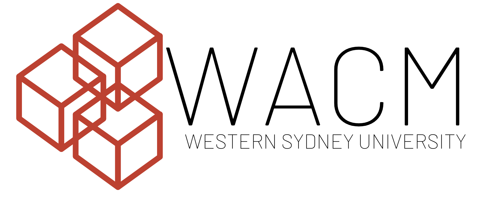
Next up was finding good people to help the club grow and finding ways to reach out to the students. Back then,
there the uni used the platform Orgsync for clubs to communicate.
It was a poorly designed platform that was easy to not care about. I myself didn't like using it, so the only other
way to reach out to people was directly on their email.
I didn't have anyones email, but I knew the professors did. So I gave it a go and wrote a lengthly reply to a few
professors initially who I thought would be willing to support.
Note to self: professors don't read lengthy emails and reply with breveity as they already have a lot of writing to
do for their reserach proposals.
But it worked! They were more than happy to spread the word around of the new club and some of them directly
forwarded my email to them. Note to self 2: Write every email as if
you would be ok with it when the whole class reads it.
That way, there were more than 50 initial responses to joining the club and some of them ended up holding executive
positions in the club. With that, we ran our
first ever annual general club meeting along with establishing social media
platforms. We also managed to get a website on the university school domain where a very talented colleague
of mine whipped up an excellent website, which further boosted the clubs integrity.
Running Events
Next up, events!
Thanks to the brainstorming session in the initial meeting, there were numeroud ideas that could have been
implemented. The first one we organized was the STEM Trivia Night.
This event was supposed to be an extended meet and greet event where students could sit in tables and answer
questions. But before this happened, the club was actually taking
over a month since our initial application to get approved by Campus Life. I was very much done with the lack of
response to my persistent emails, that I raised it in the Vice
Chancellors International Student Advisory Committee meeting. That ended up helping and the club got approved within
the week.
Unfortunately before this could happen, I felt precious time was passing by in the beginning and the semester had
already started. I understood the importance of getting things
up and running for the momentum to build. So we ran the STEM Trivia Night
as an independent event in the hopes of
getting funding for all the pizzas later after the club got approved.
The event went swell and enough people came and overall, while I was nervous the whole time, it ran without issues
and everyone seemed to have a good time. A few weeks passed, and when
I went to Campus Life to ask for the funds to cover the event, they declined saying that they wouldn't fund a single
cent. At time time, the food for the event cost me about $500 and that was a huge amount
of money for a student who worked for $20 an hour part time to support his living expenses. It was a rough time for
me, and was very dissapointed on how discouraging the university was to its students trying to go
out of their way to make things happen, when the campus life at uni was virtually non-existent. Thankfully, the SRC
President that time was able to help me cover the expenses when I had no where else to go.
Secondly we hosted Western Pitch Day 2019 together with the Student Representative Council (SRC), Business Society
and Launch Pad Technology Incubator. It was supposed to be a massive
event, expecting over 200 students to attend. Unfortunately, it was difficult to get the out message to students and
there was no clear support from Campus Life as well. While the event
ran well and lots of good ideas were shared (including from people from Amazon and other startups), the number of
attendees could have been a lot better. At this time, I was again dissapointed by the lack of support from the
university
in supporting these student run events and helping create a platform on providing students with such opportunities.
Finally, the last event of the year was IBM x WACM AI Design Thinking
Workshop. I had met
a guy at uni who was my team mate on a 180 Degrees Consulting (180DC) Project. He was unable to finish the project,
but did manage to go to an event hosted by IBM through the
180DC club and landed himself a job there as well. So I reached out to him after a year of that happening and he was
very happy to collaborate with us.
With his green light, we began marketing the event all over social media and directly to the students through the
academics. We managed the pre-event logistics of getting approval
for the event with Campus Life, booking a good room at University through Parramatta City Campus security, sending
out invitations to students and purchsing stationery needed
for the workshop by confirming with the IBM rep. This was the event that made me exactly realise how much work there
is for events to run and how important stakeholder management is.
The event went better than expected as students were very much engaged and the IBM folks ran an excellent session.
There was that half an hour of anxiety time when there were many students coming
into the room but I hadn't heard back from the IBM rep if they were on their way, so I was preparing myself for the
worse case scenario of ending up wasting everyones time.
Thankfully, that didnt happen.
The Present
There were multiple events planned for 2020, including a 'Clara World' Programming event where both IT and non-IT
students learned how to code, then a sessions to bring industy experts and academics
to teach things related to tech such as on how to use git, and also the inaugural WACM Hackathon. All these events
were in the pipeline, and as we planned for the Western Fair event to gather more student
support, COVID-19 happened and we all went to lockdown. Health and saftey was accodingly prioritized and all events
halted.
Now in 2021, I have graduated but the club has been continued and is run by a new bunch of great people who carry on
the clubs vision to bring the school's students together and help make university
a rewarding experience for them.
Here are a few of my favourite photos from my time at the club, please click on them to expand:
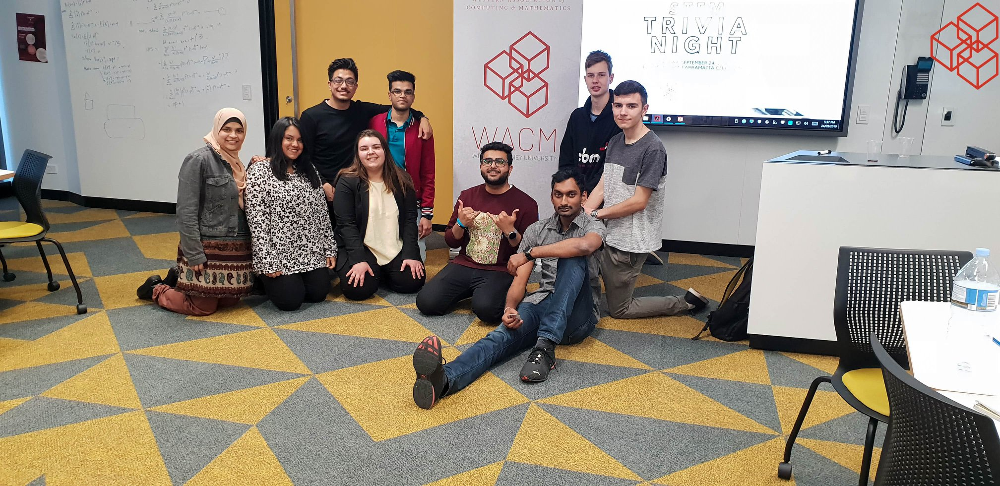
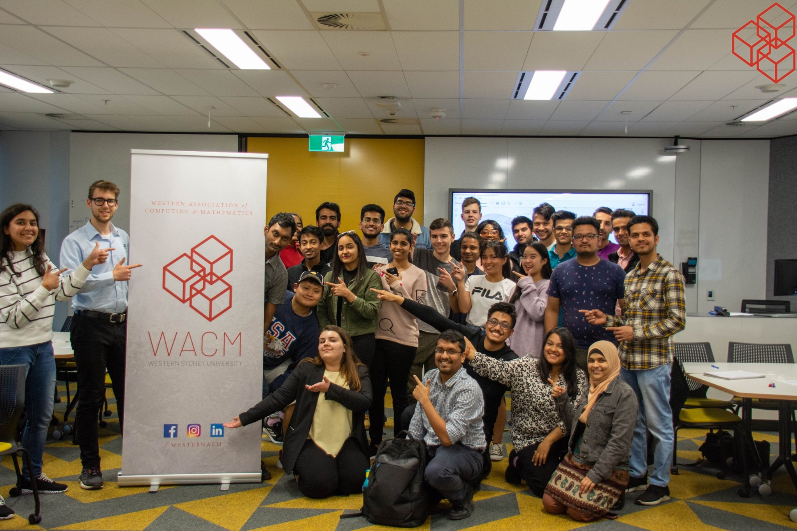
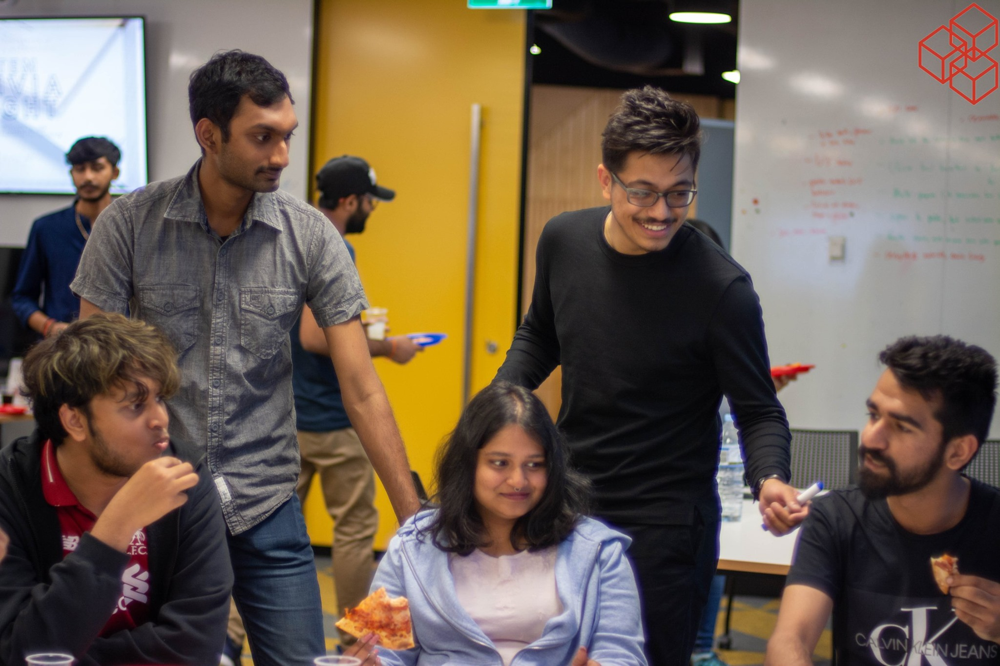
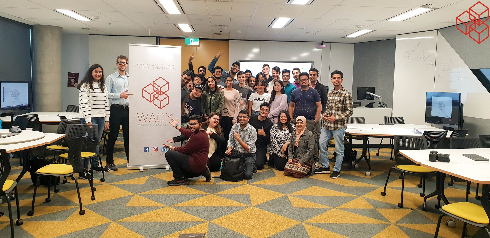
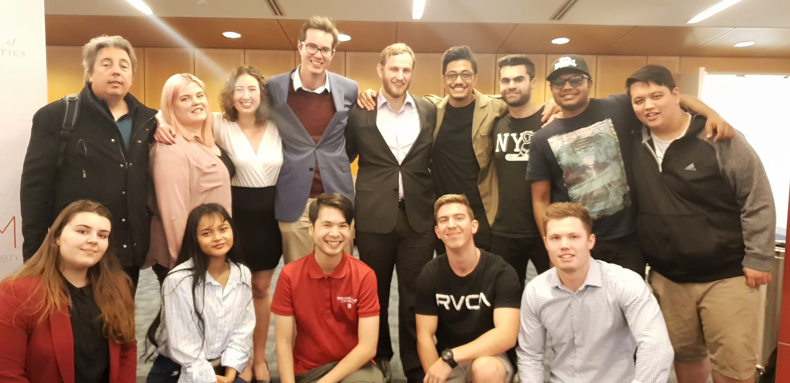
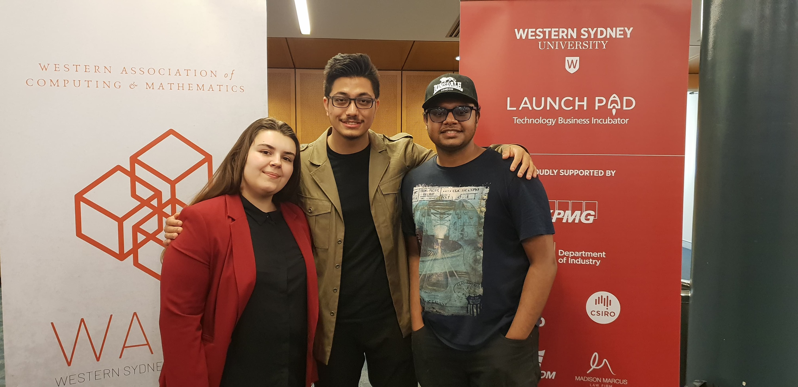
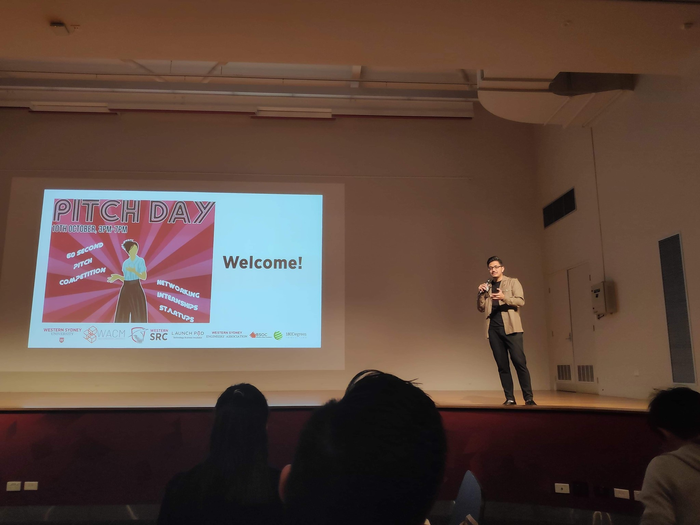
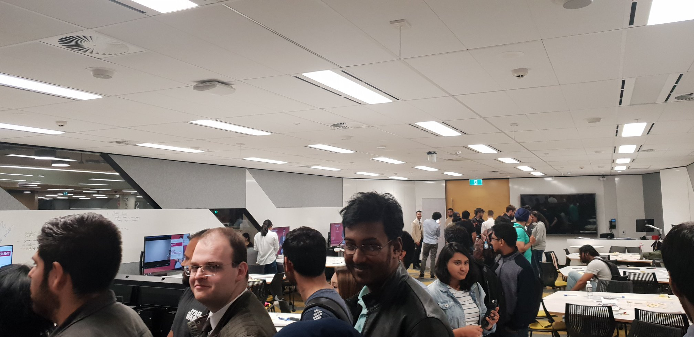
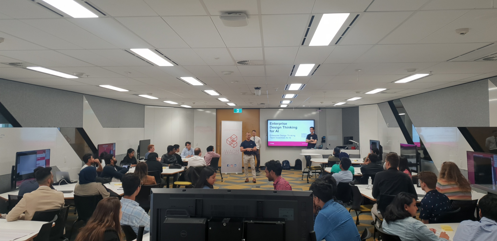
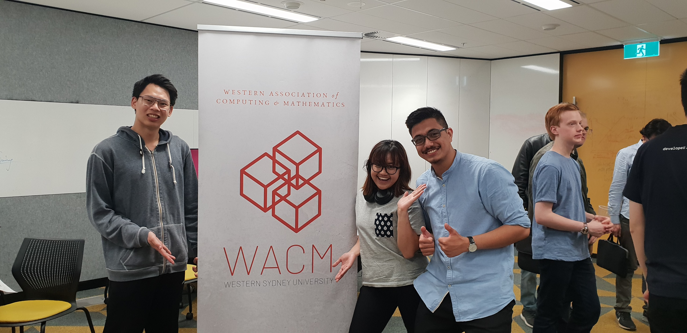
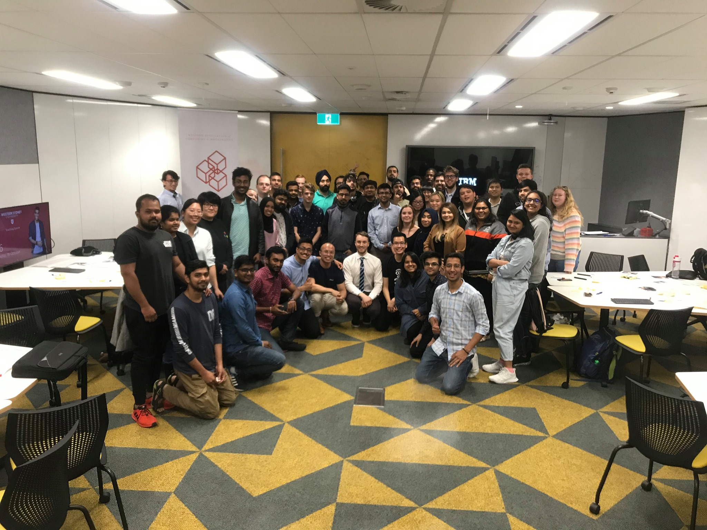
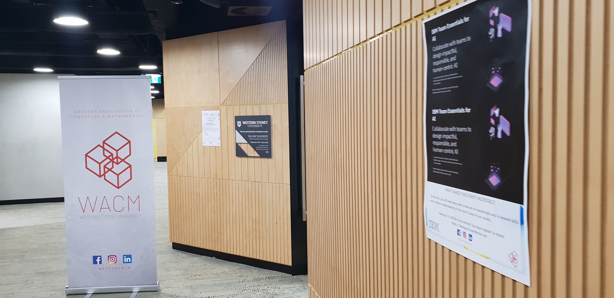
×